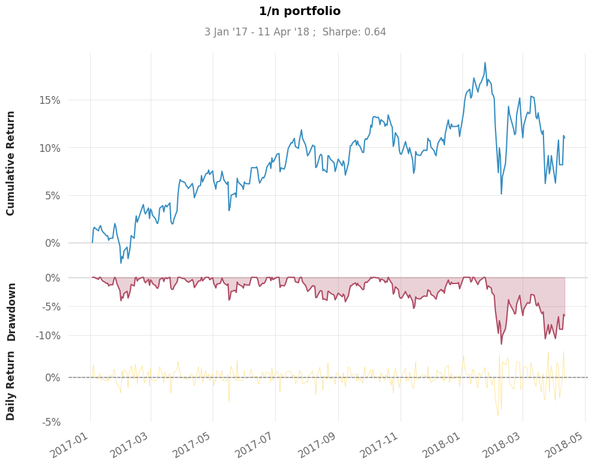
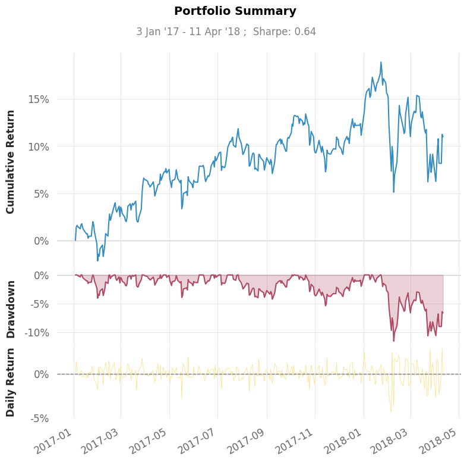
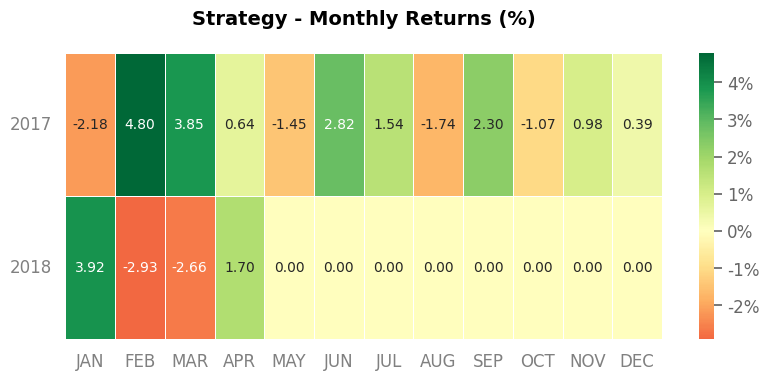

With quantstats#
We support and recommend quantstats
import pandas as pd
from cvx.simulator.builder import builder
# Get rid of findfont: Font family 'Arial' not found.
# when running a remote notebook on Jupyter Server on Ubuntu Linux server
import logging
logging.getLogger("matplotlib.font_manager").setLevel(logging.ERROR)
prices = pd.read_csv("data/stock_prices.csv", header=0, index_col=0, parse_dates=True)
capital = 1e6
b = builder(prices=prices, initial_cash=capital)
for t, state in b:
# each day we invest a quarter of the capital in the assets
b[t[-1]] = (1.0 / len(b.assets)) * state.nav / state.prices
portfolio= b.build()
portfolio.snapshot(title="1/n portfolio", fontname=None, show=True)

# quantstats is extending pandas and adds methods such as sharpe() directly to pd.Series
print(portfolio.nav.sharpe())
0.6379901607052793
portfolio.metrics()
Strategy
------------------ ----------
Start Period 2017-01-04
End Period 2018-04-11
Risk-Free Rate 0.0%
Time in Market 100.0%
Cumulative Return 10.98%
CAGR﹪ 5.85%
Sharpe 0.64
Prob. Sharpe Ratio 76.07%
Sortino 0.88
Sortino/√2 0.62
Omega 1.12
Max Drawdown -11.61%
Longest DD Days 78
Gain/Pain Ratio 0.12
Gain/Pain (1M) 1.03
Payoff Ratio 1.02
Profit Factor 1.12
Common Sense Ratio 1.17
CPC Index 0.6
Tail Ratio 1.04
Outlier Win Ratio 3.47
Outlier Loss Ratio 4.07
MTD 1.7%
3M -3.81%
6M -1.94%
YTD -0.14%
1Y 4.66%
3Y (ann.) 5.85%
5Y (ann.) 5.85%
10Y (ann.) 5.85%
All-time (ann.) 5.85%
Avg. Drawdown -1.95%
Avg. Drawdown Days 16
Recovery Factor 1.01
Ulcer Index 0.03
Serenity Index 0.55
portfolio.html(output="test.html")
portfolio.plots()

